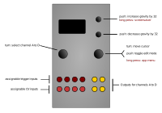

Dialectic Ping Pong

Controls
| Control | Function |
|---|---|
| Left encoder (turn) | Select channel A to D to edit (all channels always active) |
| Right encoder (turn) | Navigation mode: move up and down through the menu items. Edit mode: increase or decrease the value being edited. |
| Right encoder (press) | Toggle between menu navigation (selection) mode and value editing mode |
| Right encoder (long press) | App selection menu |
| Up button (long press) | invoke screensaver |
| Up button | Increase gravity by 32 |
| Down button | Decrease gravity by 32 |
Available settings (per-channel)
| Setting | Meaning |
|---|---|
Gravity |
g, the acceleration due to gravity, from 0 (no gravity) to 255 (gravity on a massive alien planet) |
Bounce loss |
The amount of energy lost by the ball at each bounce (0 to 255). Higher values act like a deflated basketball. |
Amplitude |
Initial amplitude (height) of the ball when the envelope is triggered, 0 to 255. |
Velocity |
Initial velocity of the ball when the envelope is triggered - the size of the kick or impulse imparted to the ball, if you like. Note that high values will cause the ball to bounce off the roof of the gymnasium that houses these envelopes. |
Trigger input |
Trigger input source (TR1 to TR4) for the current channel |
Retrigger |
retriggers the ball after x bounces, where x is the value of this setting. There is configurable CV control over this parameter. This retriggering after x bounces makes the bouncing ball into a strange sort of LFO… |
CV1 -> |
Mapping of the CV1 input to a parameter for the selected channel. Values are “off”, “grav” (gravity), “bnce” (bounce loss), “ampl” (initial amplitude), “vel” (initial velocity) and retr (number of bounces before retriggering). |
CV2 -> |
As for CV1->, but for CV2. |
CV3 -> |
As for CV1->, but for CV3. |
CV4 -> |
As for CV1->, but for CV4. |
Hard reset |
If set to on, the envelope will instantly restart at the currently set initial amplitude, rather than starting from the height that the ball happens to be at the time when the trigger is received. |
Inputs and outputs
Trigger inputs and CV1 to CV4 are mappable per-channel via the menu. Outputs for channels A to D appear on outputs A to D respectively.
Summary
Dialectic Ping Pong is a port of the bouncing ball envelope generators from the Mutable Instruments Peaks module source code (these are not exposed in the official Peaks firmware, but are available on Peaks with the Dead Man’s Catch alternative firmware installed). These generators implement a simple but effective simulation of the physics of a ball that is thrown into the air with a certain velocity, from a certain height, and which then returns to Earth (or a planet of your choice) under the influence of (configurable) gravity, and then bounces (with a settable “bounce loss” simulating how hard the ball is pumped up, if it is a basketball), before being pulled back to Earth and bouncing again, and so on.
Screensaver display
The screen is divided into quadrants, each showing a rolling display of the output values on each of channels A to D.